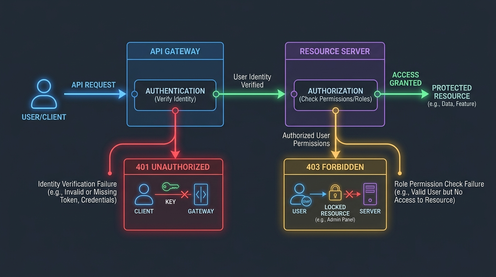
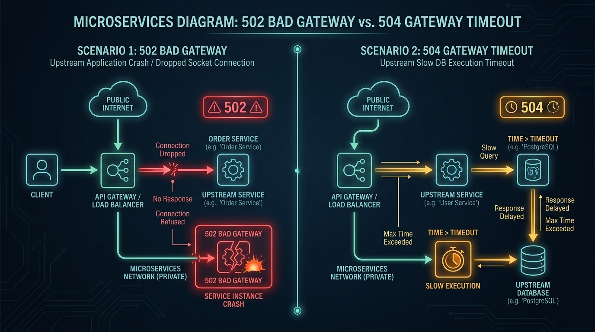

HTTP status codes are the standardized communication language between clients, reverse proxies, API gateways, and microservices. Yet, subtle misinterpretations—such as returning a 401 Unauthorized when a user lacks permission, or confusing a 502 Bad Gateway with a 504 Gateway Timeout—lead to broken API contracts, failing frontend error boundaries, and frustrating debugging sessions.

Figure 1: The 5 core HTTP status code response families.
1. The 5 Status Code Families Overview
HTTP status codes are 3-digit integers defined under RFC 7231 / RFC 9110 and managed by IANA (Internet Assigned Numbers Authority). They are divided into 5 distinct families based on the first digit:
- 1xx (Informational): Provisional response indicating request received, continuing process (e.g.
101 Switching Protocolsfor WebSocket handshakes or103 Early Hintsfor preloading assets). - 2xx (Success): Action successfully received, understood, and accepted (e.g.
200 OK,201 Created,204 No Content). - 3xx (Redirection): Further action needed to fulfill request (e.g.
301 Moved Permanently,304 Not Modified,307 Temporary Redirect). - 4xx (Client Errors): Request contains bad syntax or cannot be fulfilled due to client failure (e.g.
400 Bad Request,401,403,429). - 5xx (Server Errors): Server failed to fulfill an apparently valid request due to upstream crashes, timeouts, or unhandled exceptions (e.g.
500,502,503,504).
2. Authentication vs. Authorization: 401 Unauthorized vs. 403 Forbidden

Figure 2: 401 Identity Verification vs. 403 Role Authorization boundaries.
Despite its historical name, 401 Unauthorized is strictly about Authentication (Identity Verification), whereas 403 Forbidden is about Authorization (Permissions & Role Scopes).
Returned when the client provides invalid, expired, or missing credentials (e.g., missing Authorization: Bearer <token> header). Per RFC 7235, the server MUST include a WWW-Authenticate header indicating how authentication should be performed. The client CAN retry after supplying valid credentials.
// Correct 401 Unauthorized Response Header & Body
HTTP/1.1 401 Unauthorized
WWW-Authenticate: Bearer realm="API Access", error="invalid_token", error_description="The access token expired"
Content-Type: application/problem+json
{
"type": "https://api.example.com/errors/unauthenticated",
"title": "Unauthenticated",
"status": 401,
"detail": "Your access token expired at 2026-08-11T20:00:00Z. Please refresh your session."
}
The server successfully authenticated who you are, but your account lacks the necessary privileges or OAuth scope to perform the action (e.g., a Member trying to DELETE an Organization). Retrying with the exact same credentials will NOT change the outcome.
3. Gateway Failures: 502 Bad Gateway vs. 504 Gateway Timeout

Figure 3: Upstream process crash (502) vs Upstream response timeout (504).
In modern cloud architecture involving reverse proxies (Nginx, HAProxy, AWS ALB, Cloudflare), distinguishing 502 from 504 is essential for infrastructure debugging:
| Status Code | Meaning | Root Cause & Diagnostic |
|---|---|---|
| 502 Bad Gateway | Invalid Response Received | Proxy server received an unparseable, malformed, or dropped socket connection from upstream backend (e.g. Node.js process crashed or OOM killed). |
| 504 Gateway Timeout | Upstream Response Timed Out | Proxy waited longer than its configured timeout threshold (e.g. 30s) without receiving any byte response from upstream (e.g. unindexed slow SQL query). |
4. 3xx Redirects: 301 vs. 302 vs. 307 vs. 308
HTTP redirects differ fundamentally in whether they allow browsers to change the original request method (e.g. POST to GET):
- 301 Moved Permanently: Legacy redirect; modern browsers often change POST to GET. Cached permanently.
- 302 Found: Temporary redirect; historically changes POST to GET.
- 307 Temporary Redirect: Strict temporary redirect. Guaranteed to PRESERVE the request method (POST stays POST).
- 308 Permanent Redirect: Strict permanent redirect. Guaranteed to PRESERVE the request method (POST stays POST). Cached permanently.
5. Rate Limiting & The 429 Too Many Requests Code
To protect backend services against DoS attacks or excessive API scraping, rate limiters return 429 Too Many Requests alongside standard rate limit headers:
HTTP/1.1 429 Too Many Requests
Retry-After: 60
X-RateLimit-Limit: 100
X-RateLimit-Remaining: 0
X-RateLimit-Reset: 1786462000
Content-Type: application/json
{
"error": "Rate limit exceeded",
"message": "Quota exhausted. Retry after 60 seconds."
}
6. HTTP Method Safety & Idempotency
Figure 4: Safety & Idempotency classification for core REST API methods.
An HTTP method is Safe if it does not modify server state. An HTTP method is Idempotent if executing the request multiple times produces the exact same server side state as executing it once.
// Idempotency Matrix
GET : Safe = Yes | Idempotent = Yes
HEAD : Safe = Yes | Idempotent = Yes
OPTIONS : Safe = Yes | Idempotent = Yes
PUT : Safe = No | Idempotent = Yes (Replaces target resource state)
DELETE : Safe = No | Idempotent = Yes (Repeated deletes result in same state)
POST : Safe = No | Idempotent = No (Appends new records on each call)
PATCH : Safe = No | Idempotent = No (Depends on JSON patch payload instructions)
7. Standardized Error Contracts: RFC 7807 Problem Details
Instead of inventing custom JSON error formats, industry best practice mandates RFC 7807 application/problem+json contracts:
// RFC 7807 Problem Details Standard Payload
{
"type": "https://api.gyanki-baat.com/errors/insufficient-funds",
"title": "Insufficient Funds",
"status": 403,
"detail": "Your current balance is $15.00, but the transaction requires $50.00.",
"instance": "/account/12345/transactions/tx_9988"
}
💬 Community Discussion
What’s your team’s policy on returning RFC 7807 error objects in REST APIs? Let's discuss on LinkedIn!